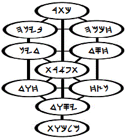
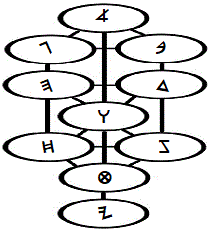
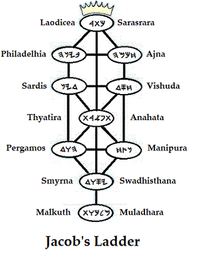

|  |
The Sephiroth: A Second Look |
 |
To resume discussion of the sephiroth from another perspective, or from another partition of the mind, it will be helpful to recall that my preliminary focus, some thirteen years after baptism in the Holy Spirit and just prior to water baptism, was upon Yesod-- on Foundation. My thoughts of Kingdom, which is Malkuth in its congregational sense, seemed-- even at that advanced stage of my life in the Spirit-- to belong to a distant future.
I hungered for the fellowship of those moving from the foot of the cross to the tent of meeting, but I imagined that the nature of my calling precluded it, for the moment: Clearly, I had been separated-- not by the workings of intellect, but by the workings of the Spirit in the events of my life. I had yet to learn that there are many clocks in the universe, and that everything is always-- whatever we might think-- right on time.
At the time of my first acquaintance with Adam Kadmon, I had also just begun serious study of scripture. Expert at being unprepared, I was not an unwilling captive to the spiritual whirlwinds in which I walked; and. even now at this late writing, immature self-accusation would turn my prayers into sin, were it not for an unreasonable faith in God's mercy (2 Cor. 12:9). With my honor wrapped in lament-- then, as also now, I looked upward within the symbol of the Tree of Life, finding that the right- and left-hand paths were blocked to my understanding. To my shame, ignorance was my means of fulfilling the saying, "turn not from it to the right hand or to the left" (Josh. 1:7). I simply had no idea what course to take (John 9:41).
The only path by which I could continue to use the symbol as a check against my thoughts (and I was beginning to have real doubts as to whether I should-- not because of a foreboding of evil, but because of burgeoning vision, which I was certain I didn't deserve), was to proceed upward from Yesod on the center path. I just didn't know any better, but I was determined to know the Savior as he appears on the heavenly cross, from the foundation of time (Rev. 13:8)! So many years ago, I had come to a place where I simply had to measure the Reality that was calling me; and now, as water baptism seemed the thing to do, I again heard the call: not as coming from an exterior understanding, but as coming from within: from Tipareth, the sixth sphere. Knowing more was not an obligation, but an inevitability.
Shortly after this long-overdue conscious commitment to learn of the Heavenly Messiah, an angel visited me with the message, "Ask what thou wilt, and I will give it thee." Without forethought, my immediate answer was, "I want you!" I wasn't even sure with whom I was speaking; but my prayer was soon to be answered, nonetheless. Praise hla! It had not been given to me to ask to be given unto Wisdom: wisdom is justified by her children (Matt. 11:19), but we are called to be children of the Living God (Luke 10:21). Although Wisdom is an attribute of myhla, divine Wisdom is of a different order, altogether, than human wisdom (1 Cor. 1:25; 3:18-19).
Many wonderful things began happening, then, in a very short period of time. Perhaps these events were what Paul meant by the teaching in 2 Corinthians 12:4. Before they began to happen to me, however, I had declared in prayer that the Father was well aware of my inability to keep silent about trivial matters-- let alone to safeguard secrets; and that I therefore charged him to withhold from me things that he wished me not to noise abroad, as I had proven myself repeatedly to be unable to exercise my will for good, despite my continually good intentions (Rom. 7). My ignorance was nearly epic (Matt. 10:27).
hwhy has great pity for us all, and is full of tender mercy (James 5:11). I drank from heavenly cups; heavenly vials were emptied into my soul; angels in the name of Jesus Christ fed me the Bread of Life on a fork made of Spirit; the precious, spiritual blood of Yahushúa was sprinkled into my being; I saw great books without pages, whose "letters" were formless Spirit moving across vast spaces as I read without understanding a single word. I was touched in the inward man by a finger of purest Light. He who speaks with the voice of many waters spoke to me twice. He who speaks without voice, writing His messages with Light in visions perceived upon the soul, began speaking with me continually (John 5:37), each message conveying in an instantaneous flash things that would require volumes to recount.
I was visited by an angel I offended by my sanctimony, which reminded me of humility; and I was freed of a powerful spell of witchcraft that had been upon me for many years, without my knowing anything about it, which reminded me of David's faith. Not every event of this period was so clearly beneficial: disobeying, at one point, in a matter that was senseless to what remained of my carnal mind, a crystal-like globe containing an evil spirit was hurled into my soul from Heaven, charged with instructing me concerning my willfulness (1 Sam. 16:14). I briefly lived with the messenger without complaint; and, when I was delivered from its badgering upon acknowledging the importance of obedience to God's voice above understanding of his will when he has taken explicit care to instruct you (of all people) directly, the buffeting spirit screamed as it ascended into the realms from which it had come.
Most astounding of all to one such as me, I learned the mystery of the bridal chamber, becoming thereby a true brother to my honored elder, Y'shúa. Adam Kadmon had no more place in my thoughts than the pillow you left this morning has in yours, when I became One with the Angel of the Presence of formless HaShem, first projected as Yahushua into the heart and mind of the true and faithful witness, Y'shua, whose life on Earth manifested the glory Yahushua had within the Father before the worlds began. My subconscious joy was a scarlet thread within my conscious shame.
"Great is hwhy, and greatly to be praised in the city of our God, in the mountain of his holiness. Beautiful for situation, the joy of the whole earth, is mount Zion, on the sides of the north, the city of the great King" (Ps. 48:1-2): Tipareth; Emanation Six; Beauty on the Tree of Life called Adam Kadmon: a mystery both revealed and magnified symbolically within the Crown Diamond of the believers' Tree of Life.
Wrestling with angels just beyond consciousness, I arose with upon the magic carpet of the kundalini to the third heaven; and a new dimension of a very familiar struggle resumed. My meditations had previously centered on the righteousness of Elohim. I had wanted to understand what HaShem is doing on Earth, that I might understand, coming to the place where I could truly praise him without ignorant fear of judgment. Now, however, persuaded that-- at some point-- something extraordinary might be required of me because of the revelations, I began to have shameful concern about my own lack of righteousness, convinced that God had, inexplicably, made some kind of mistake in designating me for some yet-unspecified work.
Parting the hoof with less-than-perfect faith, I again began to focus partly on the spiritual righteousness of hla and partly on my own, worldly progress toward a personal understanding of that standard (Matt. 8:22-24; 2 Thess. 2:7). Earthly progress attends spiritual progress; but when one tries to make of it the measurement of spiritual maturation, the standard is blurred, defying measurement; for whatsoever is not of faith is sin (Rom. 14:23), no matter what garments it presents to the eyes of man.
One thing was certain: I would embarrass God sooner or later, bringing the cross of Mashiyach to an open shame (Heb. 6:6)! It was not, exactly, that I feared myself falling away-- every day brought, and yet brings at this editing, new evidence of his mercy and favor, as also of his chastisement and judgment (Rev. 3:19)! Rather, it was that I imagined myself to have been unduly double-promoted, as it were; and that the enlightenment, if it had indeed come (by virtue of my Paul-like incursion into heavenly realms), had infiltrated inaccessible portions of the mind of a man who was consciously unprepared for its responsibilities,
As I re-read this yet again, I recall the admonition, "Have I been so long time with you, and yet hast thou not known me?" Yea, Kúrios; for eternity shall barely suffice to teach any of your great majesty. Strengthen our unbelief; and give us joy in your burden of Light. You are faithful in all things, and have answered before we called: being, Yourself, the strength needed for the completion of your great work among us.
To resume my testimony, then: the journey in my study of Adam Kadmon had progressed from Sphere Nine to Sphere Six, having begun, somewhat unusually, at Sphere Ten some years before I had even heard of such a symbol. I'd finally caught up with myself; for when the symbol first appeared before me on a piece of paper, I saw that my study had begun not at Malkuth, as I imagined, but at Tipareth, Sphere Six. That was its true beginning in fact, if not in consciousness. Shaking off my slumber, it was clear that the way from Sphere Six along the center path appeared to lead, directly, to Sphere One-- to the Supreme Crown, or Kether. How does one proceed?! He does not. The way is opened to him, or it is not; and Da'at, a swamp of knowledge, tugs at the heels of those who would walk from Six to One at their own initiative.
{kind=link}
Once, in the labyrinth years before water baptism, I was performing Bhakti yoga, the yoga of religious devotion centered on a Master. My study was clean to my mind because I maintained that the man Jesus was the master yogi, and so he is (John 10:16; Matt. 8:11; Rom. 1:17); but at some point, I became more attracted to the event called yoga than I was to understanding the teachings of Rav Y'shúa. At that instant, what I later understood to be an angel appeared, saying, "You want the circle of light?! You've got it!"
I was literally knocked to the floor, instantly, by the appearance in the center of my forehead of a circle of light some three fingers in diameter. But something was wrong! The luminescent circle was distorted by thin, undulating dark lines moving unevenly across its face! I understood the vain temerity and humbly acknowledged the error of developing a preference for the mammon of righteousness above its holy Source: I had become covetous of godliness. The circle of light was, mercifully, removed and has yet to reappear. One day it will be shared by us all.
This third eye--the single eye of the parables of Y'shúa-- is the forehead seal of the perfected, the many-petaled Lotus (1 Cor. 9:19-25; John 1:4-5, 6:27). These words are-- even now, when the moment of my birth by physical death presses upon me-- are being allowed by grace under the power of the seal of promise, which is the earnest of spiritual rest in the Father's hand. Not yet perfected, I have nevertheless been granted access to the circle of Kether. I have partaken of its fruit at the hands of the Angel of the Presence. Wrapped in swaddling clothes in 1989, the year I began this writing, I was appointed to bring forth this work and should have done much better. May my imperfections serve hwhy.
Such as I! "If 'Paul' means 'Little,'" I lamented (I had been having my troubles with Shaul's writings), "let my name be called 'Very Little'!" "Minuscule," came the silent reply.
And, so, the struggle grew: Bob versus Bora, the unrighteousness of the one being defeated by the righteousness of God in the other, only to reappear, unexpectedly, in unanticipated permutations. Day by day I have learned by the littles: more by my failures than by my successes (2 Thess. 2:3). The right- and left-hand paths I once despaired of learning have been and are yet being opened to me (Is. 45:1): Bob was becoming as Cyrus; and Bora, as Zerubbabel-- but not without terror!
"Adam Kadmon!" I protested, out of earshot of the brother who was instructing me. "You know I have rid my house of all graven images" (I had actually only eliminated the wall hangings). "I cannot deny the image of Truth I see in the symbol; but I have (Is. 45:4) known (Is. 45:5) You, the Living God! What purpose, a mere image?!'' "Bob?" came the answer, "If I open a door for you, you ought to go through it!" Even I could understand the sense of that.
Perhaps it was the Preface that recounts some details of this period in the revelations. Sorry about the time jumps, but what a joyous time it was-- too full to be contained in the telling! That my "intuition" of some need to extend the lines of Adam Kadmon beyond their usual representation was confirmed taught me that my thoughts were no longer my own, but the thoughts of Ruach haQodesh, the Spirit of the Holy (Matt. 10:20); for I had no basis for coming to that conclusion, nor any special talent. And still the vision unfolds! It's as a child that, having been born, is growing to maturity; and it shall continue its service upon Earth long after the steward of its transmission has gone home (Rev. 22:1-5).
I would willingly continue in this narrative vein, telling of the wonderful grace I continue to experience; but this work far exceeds the confines of my personal story. I share the story to encourage the Remnant. When this online version of the 2023 edition of the Crown Diamond book is posted, I understand that there will be those who have no interest in it beyond the implications of this confession-- allowing they receive it as such, and not as words of cunning (Mark 12:22): coming, as it does, from a self-avowed sinner in the Spirit for-- well, however long!
Let details come when they will. It is enough that every reader understands that I walked and continue to walk in the cross of the two Adams (Rom. 3:8), and that I am not ashamed of that cross; for it represents the power of God on the path to salvation (Rom. 1:16): unto the alignment of the earthly with the renewing will of the heavenly by means of an orderly balancing of accounts (Matt. 16:27; Ex. 21:24).
Although it was expedient to share my testimony in this treatment of Adam Kadmon, I find that the text has taken a spiral course in relation to the central topic of the presentation. The dynamics of that spiral will be presented in the illustrations concerning the Crown Diamond as it speaks to the messages to the Churches of Asia, but this discussion ought presently to concern itself more responsibly with an investigation of meanings of the sephiroth, themselves, as many have no previous acquaintance with this tradition.
Before resuming the presentation, however, it is necessary for me to digress yet once more to remind readers of a message that came when I first began writing, by a series of dreams. I was instructed to forego the modern-day practice of providing copious scriptural references.
The dreams indicated that the practice is restrictive to the free movement of the Spirit as I write, being therefore in violation of the precept, "Quench not the Spirit." Furthermore, it was made quite clear that a robotic malevolence lurks in the modern practice when used to its best effects; at its worst, the practice fosters a concomitant focus on the temporal author above focus on the Source he serves. I've not deleted biblical references, but in all text yet to be written, however, I will endeavor to write after the fashion of the apostles: quoting as I am led and alluding to scripture without designating allusions by slavish references.
To continue, briefly, with discussion of the spheres, no single exposition of the sephiroth can convey their vast applications as testimonial symbols of the Logos. We must agree to consider their cohesive implications and interactions along one line of thought only so far as that context takes us. When it no longer serves, we must prove ourselves prepared to ask about the validity of our conclusions and the direction further investigations should take. Also: because we know from testimony of elders that the letter of scripture kills, we certainly must not permit ourselves to succumb to a literalism with regards to these symbols or the allegories they engender!
It will not always-- will, perhaps, never-- be that a single line of thought will be exhausted of possible extension; but rather(were we to persist in pursuit of ramifications of a particular concept at a given point in our development regardless of spiritual factors of which we might be unaware), that our lines of thought might lead us beyond the parameters of foundational understanding and into the shifting sands of speculation. By such means do doctrines developed through such persistence become idolatrous and demonic. We are instructed by the words of Spirit and Life to follow Ruach hamyhla, and not to grieve the Spirit by choosing to follow its reflection upon our own thoughts-- either lagging behind or forging ahead, outside of the Spirit's leading. Our thoughts, along with all other dimensions of being, are to be offered in living sacrifice to HaShem.
This same mental orientation is therefore recommended in study of the scriptures themselves, also: the lively oracles of myhla Elohim address themselves to many contexts by the same Spirit, according to the questions prevalent in the mind of the reader at a given reading. As the questions are reformulated according to accrued understandings that come in answer to secular experience and spiritual growth, the oracles attune their voices, at the Spirit's directive, to the intellectual and spiritual contexts into which they are received.
To read from a new level is not necessarily to dismiss the Word's meanings at previous levels, but to advance in the spiritual interplay of point, counterpoint. To read with willful attachment to a previous level, however, is to resist being led by the Spirit; and whatsoever is not of faith is sin. Sin is "error," literally; and to offend in one point is to offend in all.
|
site |
The Sermon on the Mount |
book |